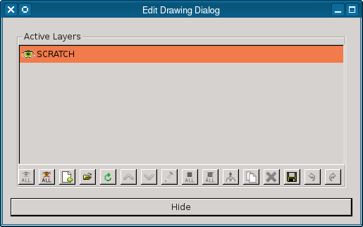
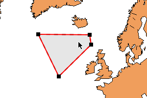
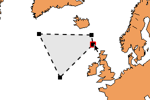
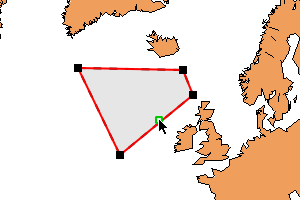
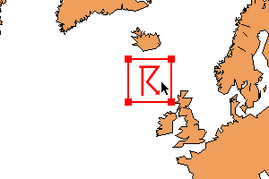
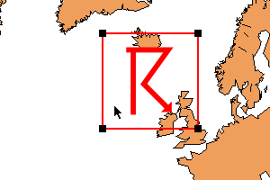
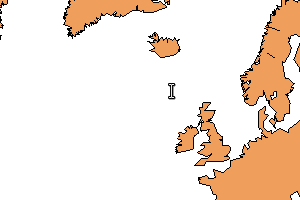
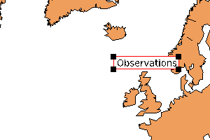

| Diana User Guide: Edit tools | Previous: Profet Drawing Tools | Next: Time Control | Index |
The edit dialogue is used during production of weather charts such as analyses and sigmaps. It
contains drawing tools for fronts, areas and symbols.
Completed charts are stored in a shared directory for distribution to other regional offices.
Charts can also be saved in the user's working directory.
New products are created using the Edit Drawing Dialogue which can be accessed via the Show menu or by pressing Ctrl-Shift-B. The data you are currently using when you create a drawing will remain visible while you create a product, so you need to ensure that you have already selected the fields, observations, images and other data you require before you start drawing.
|  |
The dialogue shows a list of Active Layers. These contain the objects that you can edit. Initially, there is only an empty scratch layer present in the list which can be used for quick work-in-progress drawings.
Layers are visible in the main window when the (visible) icon is present next to the name of the layer in the list. To hide a layer, click the icon next to its name. Click in the gap to make the layer visible again.
New layers can be added by clicking the (add empty layer) button, and the currently selected layers can be deleted by clicking the (remove layer) button. Note that the scratch layer cannot be deleted.
Layers can also be loaded from disk by clicking the (open file) button. This allows the user to select a file from their working directory, or from other locations on the disk. To save one or more layers to a file, click the (save file) button. This opens a dialogue that lets you choose name and location of the file that will contain the objects.
The other buttons are explained below.
Objects can be created and edited using the drawing toolbar which is shown by opening the Show menu and selecting the Edit Drawing Mode entry, or by pressing Ctrl-B. The toolbar allows you to choose different kinds of object that will be placed in the currently selected layer in the Edit Drawing Dialogue. The left mouse button is used to click buttons and menus in the toolbar, as well as to add and select objects in the plot.
Drawing fronts and areas
The (create polyline) button is used to start creation of a front or area. Click the button to choose the type of front or area shown in the adjacent menu or open the menu and select the type you want. You can now start to draw the object by clicking on the locations where you want to add points. To finish creating the object, use the right mouse button to add the last point. Don't worry if you have one point too many – it can be deleted later. |
 |
|  | The (select) button is used to select and manipulate objects in the plot. When this tool is enabled, you can click on an object when it is highlighted and drag it to move it around in the plot. Release the mouse button when the object is in the desired position. You can also modify an object by opening its context menu. Move the cursor over the object and click the right mouse button to open the menu. This allows you to cut or copy the object, edit its style and convert it to another object of a similar type. Note that keyboard shortcuts are also available for the cut (Ctrl-X) and copy (Ctrl-C) actions. |
Objects that are selected will be highlighted in red and will show small black squares where each of their points are. These small squares can be moved around individually to change the shape of the object. If you open an object's context menu over a point, you can select the Remove point menu entry to delete that point. Alternatively, you can press the Delete or Backspace keys to delete it. This is useful if you accidentally created the object with too many points. |
 |
|  | If you move the cursor over a front or the edge of an area, you will see a small green square appear. This shows where a new point can be placed. Opening the context menu reveals the Add point entry which can be selected to add a new point at the position indicated by the green square. This is useful if you accidentally created the object with too few points. |
Drawing symbols
The (create symbol) button is used to start creation of a symbol. Click the button to choose the type of symbol shown in the adjacent menu or open the menu and select the type you want. You can now start to place the symbol by clicking on a location on the plot. Once it has been placed, you can select and move it in the same way that you can select and move fronts and areas. You can also change the style and type of symbol via its context menu. |
 |
|  | As with fronts and areas, the symbol has four points that can be moved. However, these cannot be moved individually. Moving one of these points causes all of them to move – this allows you to resize the symbol. Click and drag a point to resize the symbol, and release the mouse button when you have finished. Note that the symbol is not shown when it is being resized, but the outline is shown to help you choose its final size. |
Drawing text labels
The (create text label) button is used to start creation of a label. Click the button to choose the type of label shown in the adjacent menu or open the menu and select the type you want. You can now start to place the label by clicking on a location on the plot. Once it has been placed, you can select and move it in the same way that you can select and move fronts, areas and symbols. You can also change the style and type of the label via its context menu. |
 |
|  | Text labels cannot be resized in the usual way. However, you can convert a label to type via the Convert entry in its context menu. You can change the text shown in a label by clicking on it with the left mouse button. Alternatively, you can select the Edit text entry in its context menu. |
Drawing composite objects
The Composite button is used to start creation of a composite object. These contain more than one type of object – usually a combination of symbols and text. Click the button to choose the type of composite object shown in the adjacent menu or open the menu and select the type you want. You can now start to place it by clicking on a location on the plot. Once it has been placed, you can select and move it in the same way that you can select and move fronts, areas, symbols and labels. You can also change the type of the object via its context menu. Composite objects cannot be resized. |
You can change the text shown in a composite object by opening its context menu and selecting the Edit item entry. This allows you to change the text used in the object, but not the symbols. Custom composite objects must be defined in the setup file. |